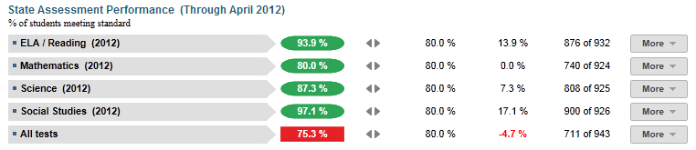
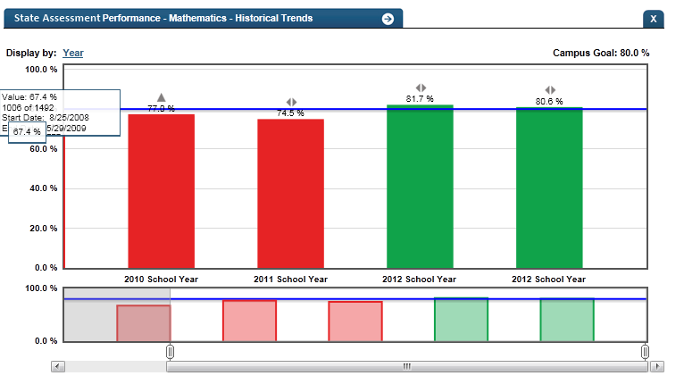

Dashboard Metrics


State Assessment
User Interface
Dashboard Example
Figure 1 shows the state assessment Performance metric as seen on the campus dashboard.

Figure 1 Ed-Fi State Assessment Performance Metric
Status Definition on the Dashboard
The Status indicator is determined by campus-specific thresholds (campus goals) which are set at the district level. The Ed-Fi default threshold is 80% of students meeting the standard for each subject.
Metric Indicators | Comparisons | |||
Metric Name | Sub-metric Name | Metric Status Indicator | Trend | Campus Goal (Delta) |
State Assessment Performance | ELA/Reading | Red (Percentage) = if percentage of students not meeting the standard is less than campus goal Green (Percentage) = if percentage of students meeting the standard is greater than or equal to campus goal | Prior year to current year | Campus goal and the calculated percentage of students meeting the standard |
Mathematics | Red (Percentage) = if percentage of students not meeting the standard is less than campus goal Green (Percentage) = if percentage of students meeting the standard is greater than or equal to campus goal | Prior year to current year | Campus goal and the calculated percentage of students meeting the standard | |
Science | Red (Percentage) = if percentage of students not meeting the standard is less than campus goal Green (Percentage) = if percentage of students meeting the standard is greater than or equal to campus goal | Prior year to current year | Campus goal and the calculated percentage of students meeting the standard | |
Social Studies | Red (Percentage) = if percentage of students not meeting the standard is less than campus goal Green (Percentage) = if percentage of students meeting the standard is greater than or equal to campus goal | Prior year to current year | Campus goal and the calculated percentage of students meeting the standard | |
(a) For each subject, the Value column displays the number of students meeting the standard state assessment score out of the total number of students taking the test in that subject.
Trend Definition
Trend Indicators: Objective is to indicate State Assessment Performance | |||
| Up green | If the value for the current time frame is more than 5 percentage points higher than the prior time frame, then display a gray arrow trending upward. | |
| Unchanged | If the value for the current time frame is less than or equal to 5 percentage points higher or less than or equal to 5 percentage points lower, then display two gray arrows pointing outward indicating no direction. | |
| Down red | If the value for the current time frame is more than 5 percentage points lower than the prior time frame, then display a gray arrow trending downward. | |
The trend does not show for the first occurrence of a time frame since data is not available.
Delta Indicators: Objective is to indicate State Assessment Performance | |||
Metric Name | Sub-Metric Name | Campus Goal | Delta |
State Assessment Performance | ELA/Reading | Set campus goal | Red (Delta Percentage) = if the state assessment Performance percentage is less than the campus goal Black (Delta Percentage) = if the state assessment Performance percentage is equal to or greater than the campus goal |
Mathematics | Set campus goal | Red (Delta Percentage) = if the state assessment Performance percentage is less than the campus goal Black (Delta Percentage) = if the state assessment Performance percentage is equal to or greater than the campus goal | |
Science | Set campus goal | Red (Delta Percentage) = if the state assessment Performance percentage is less than the campus goal Black (Delta Percentage) = if the state assessment Performance percentage is equal to or greater than the campus goal | |
Social Studies | Set campus goal | Red (Delta Percentage) = if the state assessment Performance percentage is less than the campus goal Black (Delta Percentage) = if the state assessment Performance percentage is equal to or greater than the campus goal | |
Periodicity
Recommended Load Characteristics | |
Calendar | March and June |
Frequenc y of data load | Twice a year |
Latency | School Year |
Interchange schema | Interchange-StudentAssessment.xsd |
Tooltips
The standard tool tips for the metric definition, column headers, and help functions display for this metric.
 is ‘No change from the prior period'
is ‘No change from the prior period' is ‘Getting worse from the prior period’
is ‘Getting worse from the prior period’ is 'Getting better from the prior period'
is 'Getting better from the prior period'
Business Rules
The state assessment Performance metric displays the percentage of students that Met Standard for each subject and the percentage of students that Met Standard for “All Tests,” specifically for all the subjects the student took for that year, as shown in Table 5.
State assessment taken with the following accommodations are included as part of the state assessment Performance metric:
- State assessment-S is the standard state assessment test where the administration language is Spanish.
- LAT is the standard state assessment test with Linguistic accommodations.
- State assessment-Accommodated is the standard state assessement test with special accommodations.
If an alternate state assessment test version was taken, the metric is displayed in a separate section for each state assessment test version (by subject area) and is not counted in the basic state assessment percentages, as follows:
- State assessment-M is a special state assessment test for learning disabled students.
- State assessment-Alt is a special state assessment test for severely disabled students.
For most of the school year, the values reflect the prior year state assessment scores. Once the current year state assessment test results are received and loaded, the display is updated. If a student takes the same state assessment test multiple times in the same year, the last score is used.
Table 6 lists the state assessment subjects that are tested in each grade.
Student | State Assessment Test Subjects | ||||
|---|---|---|---|---|---|
| 3 | Reading | Mathematics | |||
| 4 | Reading | Writing | Mathematics | ||
| 5 | Reading | Mathematics | Science | ||
| 6 | Reading | Mathematics | |||
| 7 | Reading | Writing | Mathematics | ||
| 8 | Reading/ELA | Mathematics | Science | Social Studies | |
| 9 | Reading/ELA | Mathematics | |||
| 10 | ELA | Mathematics | Science | Social Studies | |
| Exit Level | ELA | Mathematics | Science | Social Studies | |
Data Assumptions
- Student state assessment scores by subject (ELA/Reading, Math, Science, Social Studies and Writing) are available for the appropriate grade level (as shown in Table 5).
- The state-defined thresholds of “Met Standard” and “Commended” are indicated in the state assessment results file.
- The type of the state assessment test is available per student (e.g., state assessment-M, state assessment-Alt, etc.).
- Student absence and reason for not taking a particular test are indicated in the state assessment results file.
- Historical test scores for each student are available in the test provider files for the current year. If these are not available, best practice is for a developer to obtain test files from prior years so that historical scores are included.
Computed Values
This campus metric is a roll-up of the cohort of current students, across all grades in the campus. It is computed from the last set of state assessment scores loaded, as follows:
- For the majority of the year, the previous year’s state assessment scores are reflected
- Toward the end of the year, the current year’s state assessment scores may be loaded
Table 7 defines how values on the campus dashboard are calculated. The result of the calculation displays in the Status column on the dashboard.
| State Assessment Performance | Calculation | Excluded students |
Each subjects' percentage | number of students in cohort who met standard for the subject * 100 / total number of students in cohort who took the test in the subject |
|
All tests percentage | number of students in cohort who met the standard for all state assessment subjects designated for their grade level * 100 / total number of students in cohort who took all state assessment subjects designated for their grade level |
Data Anomalies
Anomalies
- Previous year and current year state assessment versions must be handled
- Late enrollees may have taken state assessment tests at their previous school
- Loading of data from multiple administration dates
Footnotes
An icon appears next to any metric where students have been excluded. When the user hovers over the icon, count of students who have been excluded appear in a tooltip with the reason(s) for exclusion. By clicking on the icon, the data administrator will link to the data administrator’s page for more detail.
Best practice is to exclude and footnote students based on the following criteria:
- Non-participation
- Missing test data
- Alternate testing
Date of Refresh
Best practice is for the date of last data refresh to appear next the metric in the following format:
- (Through April 2010) –container level
- (2010) – granular level
Implementation Considerations
Student Identity
Maintaining a correct and consistent student identity is at the center of any education data system. Most systems use some sort of unique identifier. However, sometimes this identifier is entered incorrectly or sometimes different systems use different identifiers.
The UDM XML supports the interchange of multiple types of identifiers. The StudentReference is a complex type within the UDM to maintain the referential integrity of the student (that is, ensuring that the data associated with each student is accurately associated with the right student). The complex type of the student reference assists with implementing the accurate matching algorithm to identify a student by utilizing any of the individual attributes (e.g., Student Unique State ID, Student ID, Campus Local ID (with Campus ID), Name and Birth Date). For example, if the Student Unique State ID is unknown, you can find the student’s identity by their Student ID, First Name, Last Name and Birth Date.
Reporting Different Versions of State Assessment Tests
Best practice is for developers to report the different test versions for students with special situations as separate metrics. A student may, in any single grade level, take different versions of a state assessment test for different subjects and these should be distinguished so an educator can track progress of students.
Reporting Retakes of the Same State Assessment Test
Currently the metric reports the most recent result for a given state assessment test by type, grade level, and subject. Alternatively, developers may show results for each time a test is taken within a school year to track the success of students retaking tests.
Loading of Current Year State Assessment for Consistent Display
The system currently computes the metric for the cohort based upon the last state assessment taken by each student. Best practice is to load a new year’s state assessment all at once in order to maintain the consistency of the metric.
Changes in State Assessments
If states are undergoing changes in assessment standards and/or tests, it may impact the way that current and longitudinal data is presented.
State Assessment Test Scores
State assessment has four types of test scores:
- raw scores - number of correct items
- scale scores - converts the raw score to a standard scale that accounts for different levels of difficulty in questions
- vertical scores - enables the comparison of a student's score in one grade with the student's score in the next grade for the same content area. Vertical scores are provided only for reading and math in grades 3 through 8.
- horizontal score - enables direct comparisons of performance across different test administrations within a grade and subject area, but not across grades or subjects. This score is used for grades 5 and 8 science, grades 4 and 7 writing, grade 8 social studies and all EOC assessments.
Assuming that cut scores (or guidance on cut scores) are available, Ed-Fi is able to test some level of reporting on state assessment during the final quarter of pilot testing. The first set of state assessment 3rd through 8th grade results may not be available until after the pilot period because performance standards will not be set until October 2012.
Ed-Fi plans to create an algorithm that enables a visual comparison between state assessment and state assessment data by using cut score thresholds.
State Assessment Standardized Test Scoring Levels
State assessment will have three performance levels: Level I: Unsatisfactory Academic Performance, Level II: Satisfactory Academic Performance, and Level III: Advanced Academic Performance.
On the dashboards, the detail views for scale, vertical and horizontal scores are graphed. To display these detail graphs properly, cut scores must be available.
Aggregate Metric Inclusions and Exclusions of Special Education Students
Each campus's aggregate metrics may include or exclude the special education population, depending on the intended purpose for a specific metric and campus goal.
Indicator and Metric Definitions
In researching best practices across leading districts, state standardized test performance was identified as a leading indicator of academic success. One implementation of this metric is measuring the percent of students passing the state standardized tests in all tested subjects: reading/ELA, writing, math, science and social studies at the applicable grade levels and for all tests. Other ways districts measure this indicator include:
- Repeat Test Takers: percent of students who failed the state standardized test the prior year but passed in the current year.
Drill Downs
Drill Down Views
The dashboards include the option to see more detail that is associated with a specific metric. Table 8 lists the drill down views that are recommended for this metric.
| Advanced Analysis | Break down of student test assessment (commended, not commended, met standard, and didn't meet standard) (Future Implementation) | |
| Grade Level | Graph of test assessment detail by grade level | |
| Historical | Graph of metric values across years. | |
| Student List | List of students who do not meet the threshold for this metric for the specified period. |
Business Rules
The Historical Graph allows the user to see historical data across multiple timeframes. As time passes, there are many bars to be displayed; therefore, the slider on the bottom allows the user to adjust the number of bars displayed as well as the time period shown. The timeframes for this metric were chosen based on educator feedback.
User Interface
Dashboard Example
Figure 2 shows the Historical view of state assessment performance as seen in the campus dashboards.

Figure 2 Ed-Fi Historical State Assessment Performance